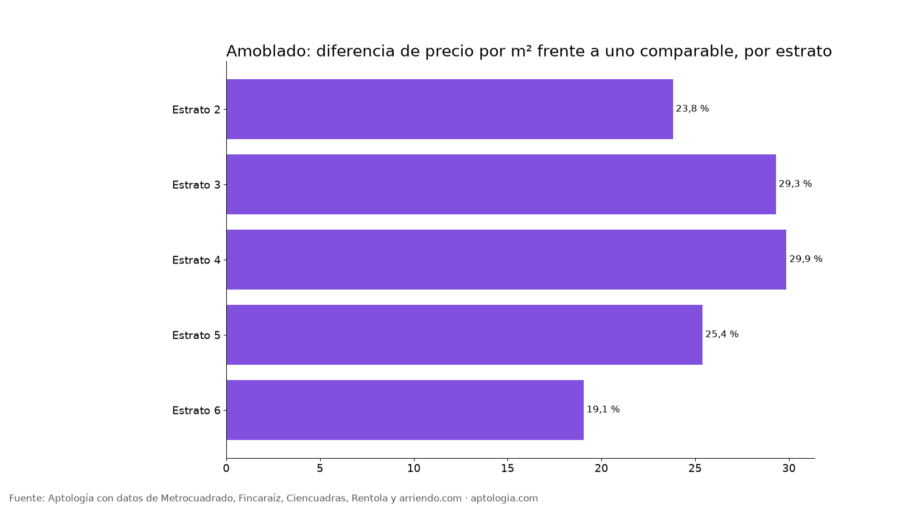

¿Cuánto más cuesta un apartamento amoblado en arriendo en Bogotá? (octubre 2026)
Estudio con datos abiertos (CC BY 4.0). Versión original: https://www.aptologia.com/estudios/arriendo-amoblado-bogota · DOI: 10.5281/zenodo.23343380
En Bogotá, un apartamento en arriendo que está amoblado cuesta en promedio 22,9 % más por metro cuadrado que uno comparable del mismo estrato y número de habitaciones. Lo menciona el 13,7 % de los avisos con descripción; el canon mediano de los que sí es $4.100.000 frente a $2.200.000 de los que no.
Resumen: analizamos 19.156 apartamentos en arriendo únicos en Bogotá con descripción, de los cuales 2.628 mencionan que está amoblado.
Actualizado: 13 de octubre de 2026 · Próxima actualización: mensual.

Por estrato
| Estrato | Avisos | Lo mencionan | Canon mediano con | Canon mediano sin | Diferencia por m² (comparable) |
|---|---|---|---|---|---|
| 2 | 454 | 5,7 % | $1.650.000 | $1.150.000 | 23,8 % |
| 3 | 3.057 | 12,3 % | $1.800.000 | $1.588.000 | 29,3 % |
| 4 | 3.409 | 16,3 % | $2.635.000 | $2.450.000 | 29,9 % |
| 5 | 1.938 | 21,8 % | $4.348.000 | $4.300.000 | 25,4 % |
| 6 | 5.719 | 21,5 % | $7.000.000 | $9.617.600 | 19,1 % |
Cómo usarlo para decidir: la diferencia de canon bruta mezcla estrato y tamaño; la columna comparable aísla lo que pagas por el atributo. Úsala para negociar: si te cobran mucho más que esa prima, hay margen.
Preguntas frecuentes
¿Cuánto más cuesta un apartamento que está amoblado en Bogotá? Unos 22,9 % más por m² frente a un apartamento comparable (mismo estrato y habitaciones), según 2.584 avisos con el atributo, corte al 13 de octubre de 2026.
¿Qué porcentaje de apartamentos en arriendo en Bogotá está amoblado? El 13,7 % de los avisos con descripción lo menciona.
Metodología
- Fuente: base de ingesta diaria de Aptología, con avisos públicos de Metrocuadrado, Fincaraíz, Ciencuadras, Rentola y arriendo.com. Corte al 13 de octubre de 2026.
- Filtros: avisos vivos que pasan el control de calidad, en Bogotá, canon entre $400.000 y $30.000.000. Se excluyen TikTok y Facebook Marketplace.
- Duplicados: se deja un aviso por grupo de duplicados (el mismo inmueble en varios portales).
- Prima emparejada: se compara el precio por m² de avisos con y sin el atributo dentro de la misma celda de estrato × habitaciones (mínimo 8 avisos por lado) y se reporta la mediana ponderada de las diferencias. Así la prima no se confunde con estrato o tamaño. El atributo se detecta en el texto del aviso, por lo que solo cuentan avisos con descripción.
- Limitaciones: son precios pedidos, no cerrados. Los barrios y localidades vienen tal como los escribe cada portal.
- Datos abiertos: datos.csv, licencia CC BY 4.0.
Cómo citar
Pinzón Pineda, D. M. (2026). ¿Cuánto más cuesta un apartamento amoblado en arriendo en Bogotá? (octubre 2026). Aptología. https://www.aptologia.com/estudios/arriendo-amoblado-bogota. Datos: datos.csv, licencia CC BY 4.0.